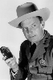

Country:United States, 99 minutes
Spoken languages:English
Genres:Action, Crime, Drama, Thriller
Director(s):Sidney Lumet
Writer(s):Frank Pierson, Lawrence Sanders
Video Codec:Unknown
Number: 880


Certification:PG
Storyline:
Thief Duke Anderson—just released from ten years in jail—takes up with his old girlfriend in her posh apartment block, and makes plans to rob the entire building. What he doesn't know is that his every move is being recorded on audio and video, although he is not the subject of any surveillance.
Cast: 


Medium: Original DVD,
Comments: Part of: Action 20 Movie Collection
Loaned: No
Aspect ratio: Unknown